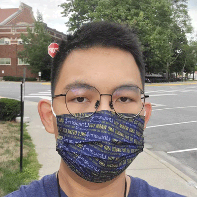

Welcome to my Portfolio!
Greetings! Here you will find information about me, my CGT classes, and more.
About Me
I'm Yake Wang, Zack is my preferred name. I'm a senior this year in Purdue's Polytechnic Institute, majoring in game development. I grew up in Shenzhen, China, and moved to Massachusetts, US as an international student in 2019. Later, I finished high school in Delaware before joining Purdue. I have internship work experience in programming-related jobs in multiple tech companies including DJI. I dream to become an indie game developer in the future.

What I Do
Game Design
Not just a college major, game design has been a passion for me. I drafted up many bits of interesting game ideas during my spare time. It all started with a few minigames scripted using Python with the Pygame library. In the process of learning more sophisticated game development toolsets, including Unreal and Unity, I have created some well-polished demo projects.
Robotics
I was first introduced to the concept of programming when I began working on robotics competitions, which used beginner-friendly graphical programming tools with LEGO RCX. I later studied C/C++ programming languages for use in more professional competitions like VEX Robotics and DJI RM. Robotics trained my coding and engineering skills while bringing me challenges and friendships.
Minecraft!
I currently host a modded Minecraft server with over 100 total players. Check out the online 3D world map and the Niijima Railways modpack on Modrinth. Some of the mods featured in this server were programmed by me. I consider this game to be one of the greatest games with its remarkable freedom that empowered its vast and amazing communities and endless creativity.